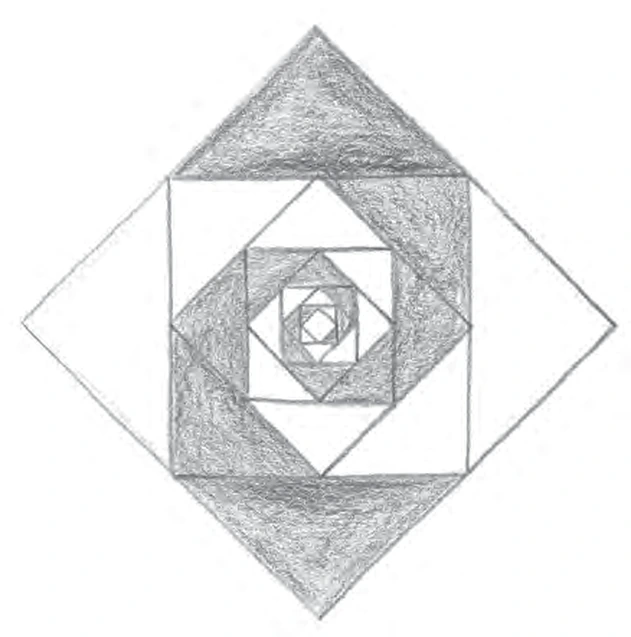

5º ano · 45 min · P5-03
Quadrados encaixados pelos pontos médios
Ligar pontos médios para formar outro quadrado e comparar áreas sucessivas.
Antes de começar
Prontidão: Identificar ponto médio e contar unidades quadradas.
Materiais: Papel quadriculado, régua, compasso ou pontos médios por dobra, giz de cera.
Divida em sessões menores se necessário. Um adulto deve manusear ferramentas pontiagudas; peças prontas, descrições orais e contornos são alternativas válidas.
Ideia de ensino
Num quadrado de 8 cm, unir pontos médios remove quatro triângulos retângulos, cada um com catetos de 4 cm e área de 8 cm². O quadrado interno tem área 64 − 32 = 32 cm². A inclinação não deixa de torná-lo quadrado. Cada novo quadrado de pontos médios reduz a área à metade, não o lado.
Observe os diagramas do livro

Escolha um quadrado externo e marque os quatro pontos médios dos lados. Ao uni-los, surge um quadrado com metade da área. Girar o quadrado muda sua orientação, não sua forma.
Siga as medidas escritas e as etapas da aula; estas ilustrações redimensionadas não são moldes para medir.
Ritmo da aula
- 5 min · Retome a área de um quadrado de 8 por 8 e o significado de ponto médio.
- 15 min · Desenhe o quadrado externo; encontre quatro pontos médios por dobra, construção ou contagem. Una-os em ordem. Teste lados iguais e ângulos retos.
- 20 min · Recorte ou trace os quatro triângulos dos cantos. Junte-os em dois quadrados de 4 por 4 para comparar área removida e restante. Repita o passo dos pontos médios duas vezes e registre áreas.
- 5 min · Explique por que a área cai à metade. Na próxima semana, preveja antes de desenhar em outro quadrado.
Tente antes de revelar a resposta
Dê as três primeiras áreas internas quando a externa é 64 cm².
Revelar raciocínio e resposta
32, 16 e 8 cm²; tome metade da área anterior.
Reduzir um lado de 8 cm à metade produz metade da área?
Revelar raciocínio e resposta
Não: um quadrado de 4 cm tem 16 cm², um quarto de 64 cm².
Um quadrado externo tem área de 100 cm². Preveja a área do primeiro quadrado dos pontos médios.
Revelar raciocínio e resposta
50 cm² pelo mesmo rearranjo dos quatro cantos.
O que observar
Peça justificativa por recorte e distinga escala de lado da de área.
Pergunte: O que mudou? O que permaneceu? Como conferir? Avalie desenho, modelo e explicação separadamente do capricho.
Apoio
Use grade pronta e triângulos recortados; adie fórmulas até as peças coincidirem.
Amplie quando houver prontidão
Compare perímetros: cada lado novo é o anterior dividido por √2; trate como extensão posterior opcional.
Conexões
A oficina dos quadriláteros → Continue no curso existente · G7-06
Fonte e lacuna abordada
Acrescenta uma sequência de arte geométrica com relação explícita de áreas.
Ernst Schuberth · Geometry Lessons in the Waldorf School, Volume 2 · PDF 54–56,68–69. Estímulo temático; atividades, exemplos e modelos esquemáticos são originais. Diagramas adicionais do livro são creditados individualmente.
Ron Jarman · Teaching Waldorf Mathematics in Grades 1–8 · Markdown fornecido de 249 páginas, marcadores do PDF capturado 171–172. As seções de geometria e a visão geral por ano foram revistas diretamente. As referências são desta transcrição, não das páginas Kindle nem da transcrição anterior de 300 páginas. O OCR pode danificar fórmulas e omitir figuras; os exemplos aqui são originais e conferidos independentemente.
Atividades originais; a sequência por ano é flexível. Desenhos e explicações precisam de avaliação humana. Estas páginas não salvam progresso.